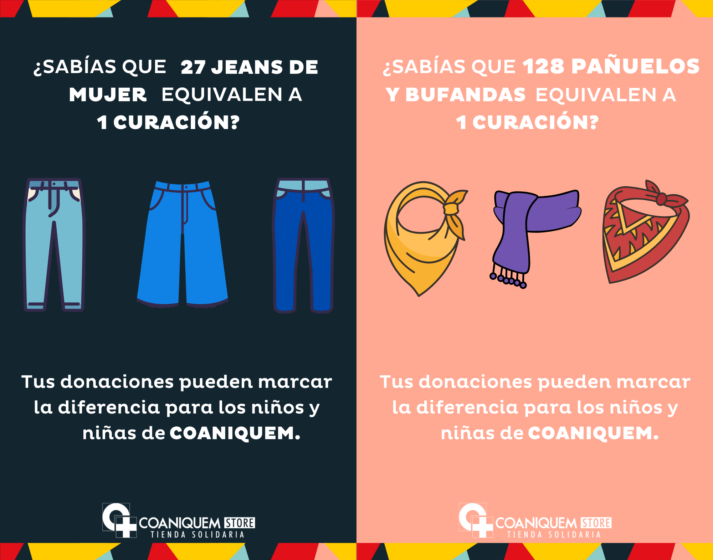
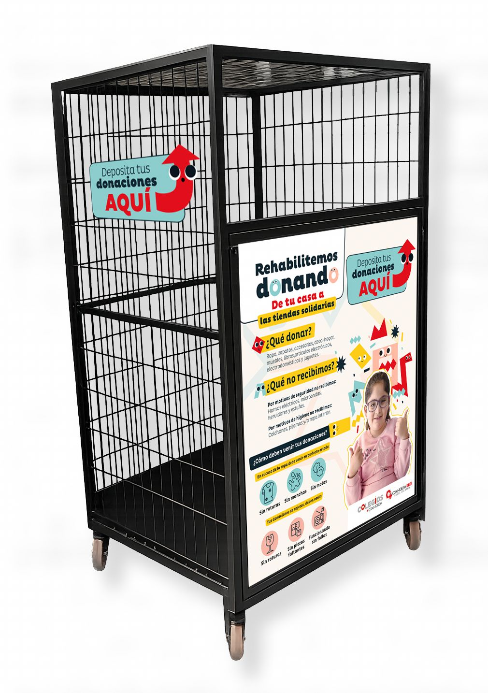
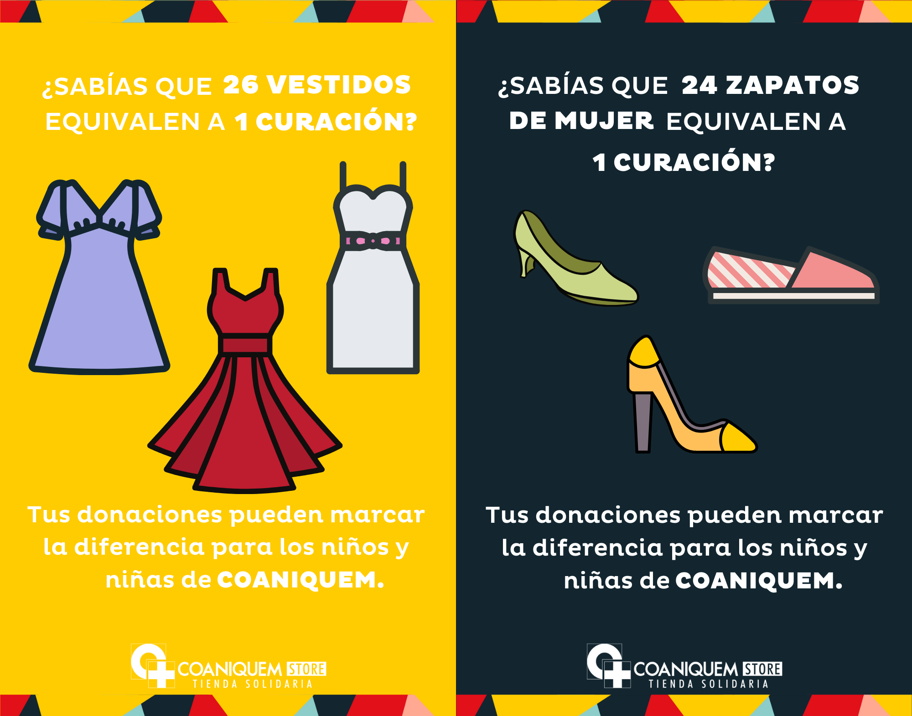
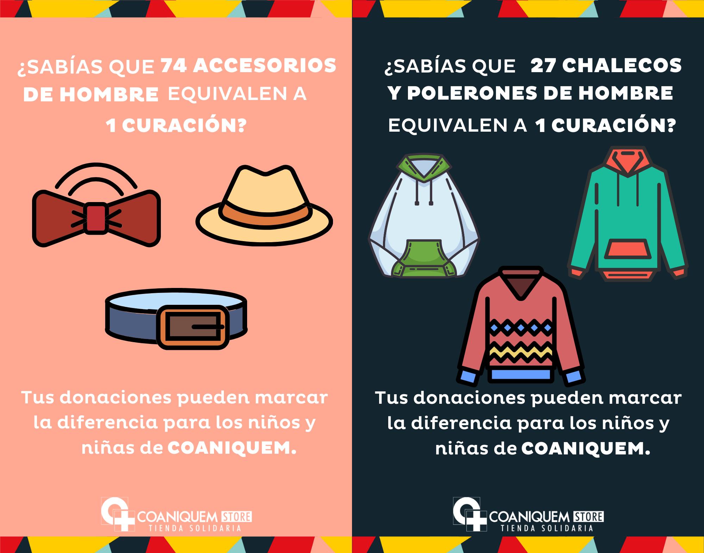
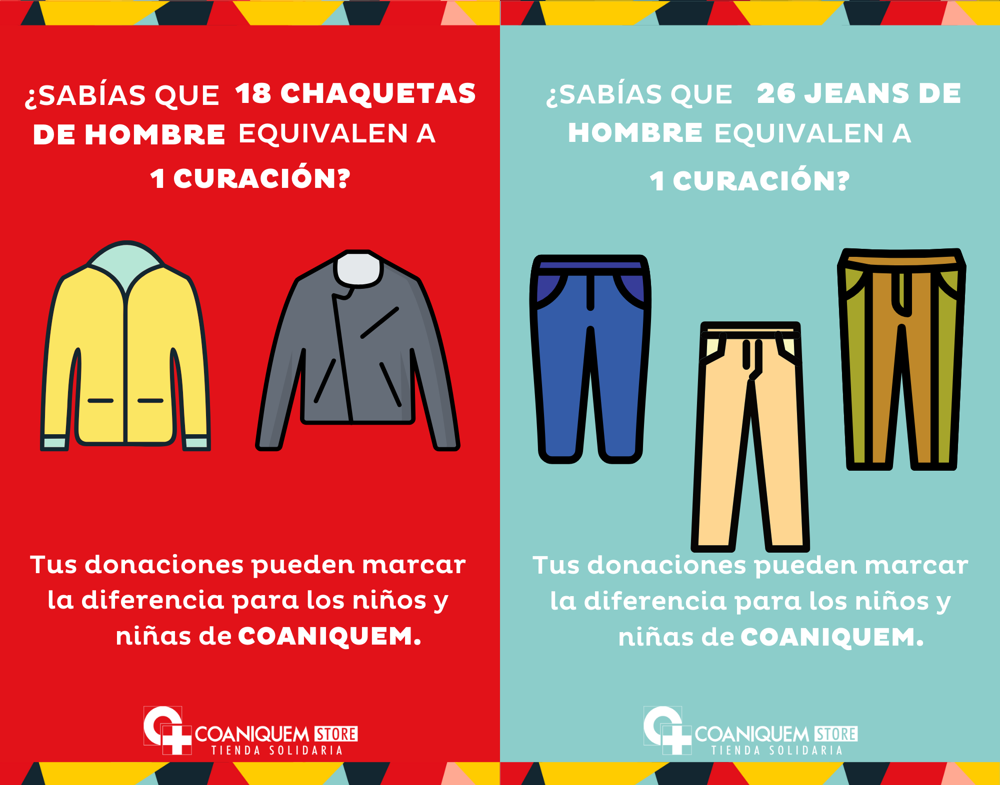
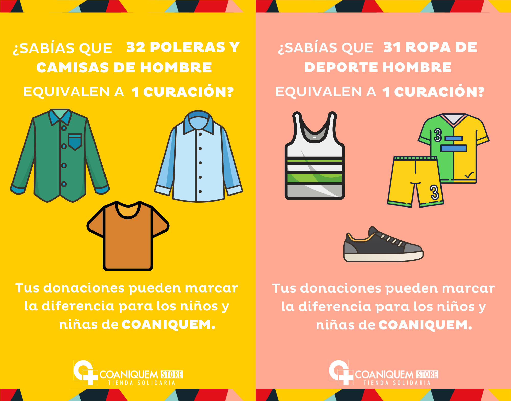

📅 EcoFest 2026 · 06 junio
Rehabilitemos donando
Coaniquem llega a EcoFest con una acción solidaria y circular: recibir donaciones en buen estado para darles una segunda vida y apoyar el trabajo de la fundación.

Coaniquem en EcoFest
Una actividad con sentido ambiental y social
La iniciativa busca potenciar la economía circular y dar a conocer el impacto que tienen las donaciones. Durante el EcoFest, la comunidad escolar podrá participar entregando objetos en buen estado en el punto de recolección de Coaniquem.
Las donaciones serán posteriormente gestionadas por la fundación en sus tiendas solidarias, transformando objetos que ya no se usan en una oportunidad de ayuda concreta.
Guía de donaciones
◆ ¿Qué donar? ◆
Para que las donaciones puedan reutilizarse, todo debe estar limpio, completo, funcionando y en perfecto estado.
Sí recibimos
- Ropa para mujer, hombre, niños y niñas.
- Zapatos y accesorios.
- Menaje y decoración.
- Juguetes, rodados, libros y música.
- Objetos útiles, completos y aptos para una segunda vida.
No recibimos
- Artículos enchufables, parrillas, objetos cortopunzantes, andadores y sillas de auto.
- Colchones, pijamas y/o ropa interior.
- Textos escolares ministeriales.
- Objetos rotos, incompletos o con fallas.
- Ropa con roturas, manchas o motas.
Recuerda: todo debe estar en perfecto estado
La ropa debe venir sin roturas, sin manchas y sin motas. Los objetos deben venir sin roturas, sin piezas faltantes y funcionando sin fallas.
Triple impacto
Donar también es una acción circular
Esta actividad conecta el cuidado del medio ambiente, la ayuda social y la participación de la comunidad escolar.
Impacto ambiental
Promueve la reutilización y evita que productos en buen estado terminen como residuos.
Impacto social
Apoya la labor de Coaniquem y visibiliza el valor de donar de manera responsable.
Impacto comunitario
Invita a estudiantes, familias y comunidad escolar a participar en una acción concreta.
Punto de recolección
¿Cómo funcionará durante el EcoFest?
El día del EcoFest se habilitará un espacio tipo stand con un contenedor de Coaniquem, donde las familias podrán depositar sus donaciones.
La imagen del contenedor se deja como elemento secundario, para explicar visualmente cómo será el punto de recolección sin quitar protagonismo a la gráfica principal de “qué donar”.
📦 Contenedor de donaciones
👥 Apoyo de voluntarios
♻️ Economía circular

Tus donaciones marcan la diferencia
◆ Equivalencias de donación ◆
Estas gráficas ayudan a mostrar cómo distintos tipos de donaciones pueden transformarse en apoyo concreto para niños y niñas.




Participa donando en EcoFest
Revisa en casa qué objetos están en buen estado y pueden tener una segunda vida. Tu donación puede apoyar una causa solidaria y fortalecer la economía circular.
Volver a EcoFest